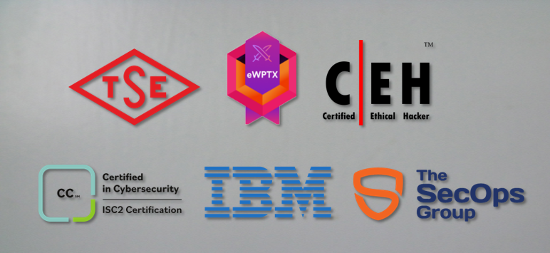

Ersin ERENLER
Penetration Tester
A passionate and experienced penetration tester. With a strong background in cybersecurity and ethical hacking, I specialize in identifying and mitigating security vulnerabilities within web applications.
A passionate and experienced penetration tester. With a strong background in cybersecurity and ethical hacking, I specialize in identifying and mitigating security vulnerabilities within web applications.
Experienced Penetration Tester at NSC Soft, adept at identifying and securing vulnerabilities across networks, web applications, and mobile applications. Proven track record in delivering comprehensive assessments, staying abreast of cybersecurity trends, and effectively communicating technical findings to stakeholders. Dedicated to fortifying digital infrastructures and contributing to the ongoing success of clients in the dynamic cybersecurity landscape.
As a project manager with a strong background in leading cybersecurity teams, scoping and executing penetration tests, and delivering actionable insights to clients. My expertise in risk assessment, project management, and clear communication, coupled with my commitment to staying updated on industry trends, makes me a valuable asset in safeguarding digital assets and enhancing security postures for diverse organizations.
